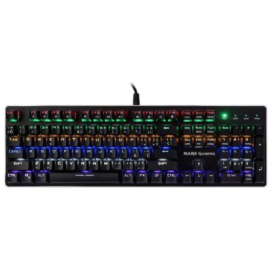
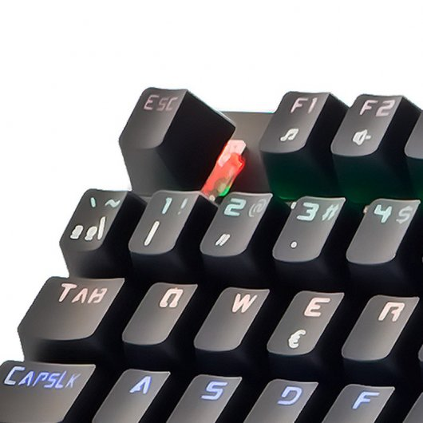
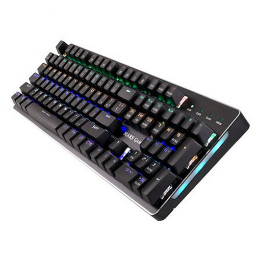
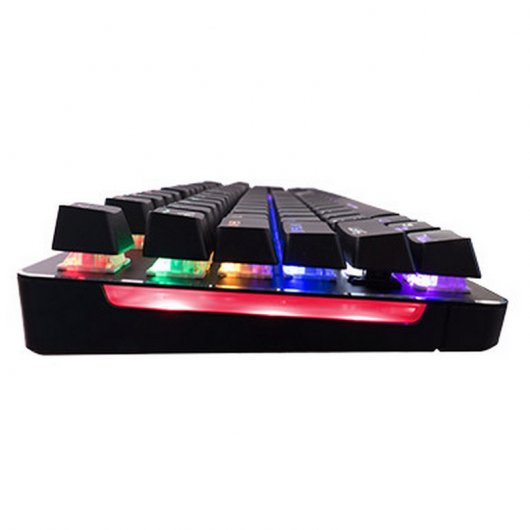
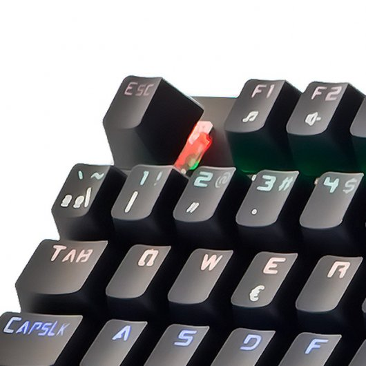
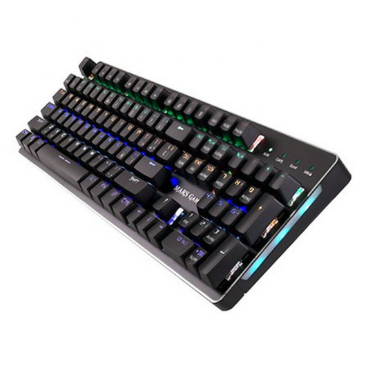
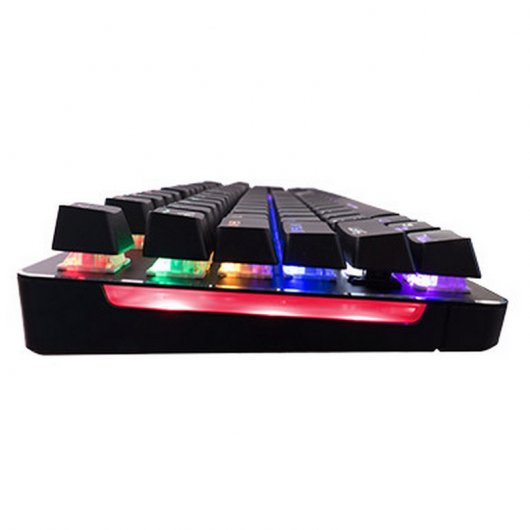

FUTURETECH STORE |

 





|
Tacens Mars Gaming MK4
39,99€
Pensado para los gamers más exigentes, el MK4 es el primer teclado totalmente mecánico de Mars Gaming, con switches rojo y azul para ajustarse a los gustos de los gamers y tecnología profesional con anti ghosting total.
Características
Switches Mecánicos OUTEMU: Los switches rojo y azul ofrecen dos tipos distintos de pulsación: rojo para unas teclas que requieren una pulsación más suave y una mayor reducción de ruido; y azul para una gran precisión.
Iluminación en 6 colores + RGB FLOW: Impresionantes efectos de iluminación con hasta 10 efectos, incluido el RGB flow lateral, y 6 colores distintos con modos programables para una personalización total.
Los mejores materiales: El MK4 está pensado para durar. Cuenta con un cable trenzado de doble nylon y un USB chapado en oro para una mayor resistencia y máxima conectividad. Sus teclas exclusivas con proceso de inyección dual y su cubierta de aluminio te permitirán disfrutar de este teclado por mucho tiempo.
Inyección dual: tecnología avanzada: La inyección dual ofrece materiales puros, prescindiendo de la pintura y garantizando así la máxima durabilidad de las teclas. Esta tecnología innovadora evita el desgaste de las teclas y está especialmente orientada al gaming.
Doble layout y teclas multimedia: Este teclado cuenta con doble layout, pudiendo ser utilizado indistintamente en dos idiomas: inglés y español. El MK4 tiene también 12 teclas multimedia para adaptarse a las necesidades de todo gamer.
Especificaciones
Tipo | Teclado mecánico
Tecnología | Profesional-gaming
Tipo de switch | Disponible en azul MK4B o rojo MK4R
Teclas | Exclusivas con proceso de inyección dual
Teclas de función | 15
Pulsación | 1000Hz frecuencia de sondeo / capacidad anti-ghosting
Cable | Trenzado de doble nylon con USB bañado en oro
Materiales | Cubierta de aluminio
Iluminación | RGB flow / 6 colores / 10 efectos
Dimensiones | 439x134x41mm
Peso | 930g
|


{kind=link}
{kind=link}
{kind=link}